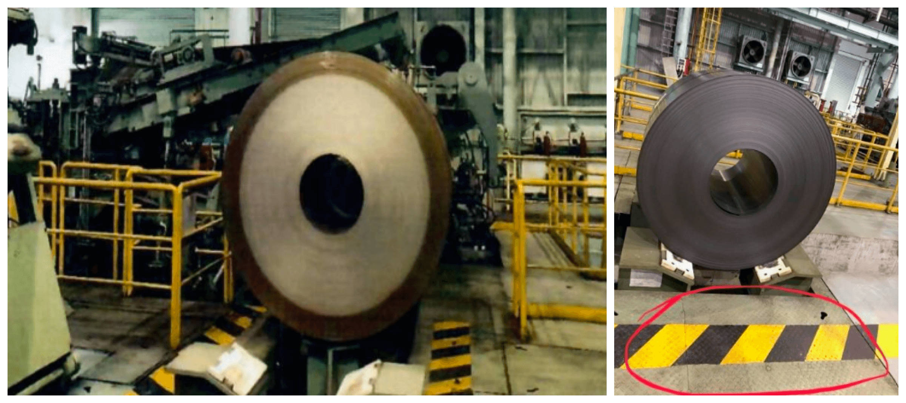
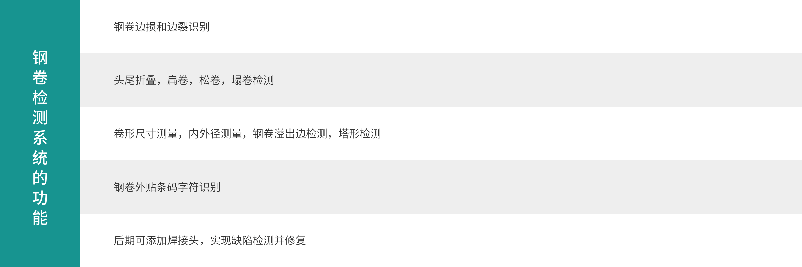
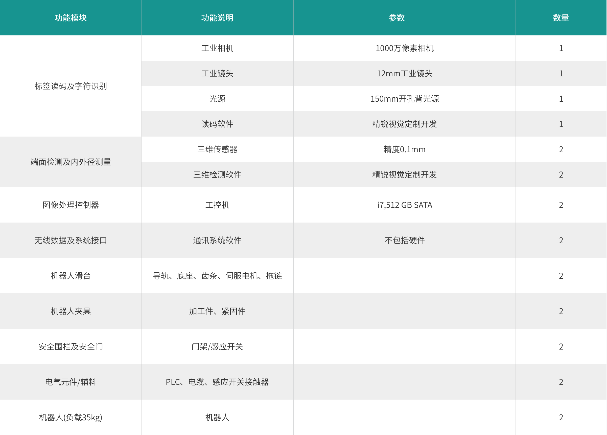
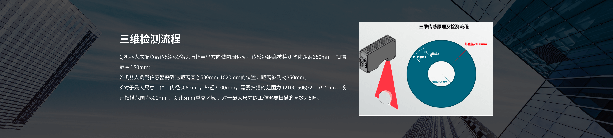

首页
核心技术
木星一号
木星二号
钢卷
产品中心
解决方案
关于精锐
新闻中心
联系我们
中文
钢卷智能视觉检测系统
公司与中国某钢铁龙头企业合作，在其湛江工厂冷轧厂钢卷加工区建设了钢卷智能视觉检测示范应用工程。实现了钢卷端面缺陷的自动检测，解决了湛江厂区冷轧厂钢卷检测工作强度大、效率低，检测环境恶劣的重大需求。
现场环境昏暗，夏季温度超过45摄氏度，遍布机械设备，人工检测存在极大的安全隐患。现场环境如下图所示：
系统说明
钢卷检测系统的安装施工分为四个部分，分别是机械结构设计原装，硬件选型配置，软件和算法开发，整机调试运行。该款检测系统可以检测的内容如下表

传感器等硬件配置情况
检测系统主要硬件由以下组成，如下表所示

安装调试进度
安装检测系统时需要产线输送设施配合，所以需要停产检修配合。不同需方情况不一样，具体方案将根据需方实际情况进行定制。钢卷检测系统由专业工程师在现场进行安装与调试。钢卷检测系统调试期间，根据现场情况，若现场存在易燃易爆等风险或者现场环境恶劣，则需要安排停机配合，时间为5到7天。

系统投资回报分析
上线一台三维视觉高精度检测系统的投资金额在30到300万之间，根据待检测零件的精度要求，检测的内容，工件尺寸，检测速度的要求，传感器选型和配套的机械手配置不同而变化。
三维三维视觉高精度检测系统投资内容如下表所示

系统上线后，原先的人工检测方式将完全由检测系统代替，原来进行检测的技术人员可以在中央控制室值班，对检测系统呈报的实时数据进行监测，大大减少了技术人员的工作强度，彻底解决了相关技术人员招工困难，岗位流动性大的重大需求。另外，该系统可以实现24小时不间断检测，对所有产品进行全部检测，大大减少了缺陷的漏判率，提升了生产线产品的品质。
以冷轧厂钢卷检测区域为例，原有人工检测方式，相关岗位招工困难，且流动性非常大，每年相关岗位的培训、招聘和人员福利的花费多达200万元，上线机器人系统后，相关岗位的培训，招聘和人员福利费用可以下降一半以上，之间减少资金投入100万元以上。同时，原有人工检测方式，缺陷产品有很大可能流入最终客户，每一个缺陷钢卷流入客户最终将造成人力物力方面的损失多达20万元，平均每年都会发生因为不良品流入市场造成的客户投诉10余起，直接经济损失200余万。机器人检测系统上线后，客户投诉时间频率将下降一半以上，减少直接经济损失100万元以上。以上线一套机器人检测系统的费用200万元计算，平均投资回收期在半年左右。